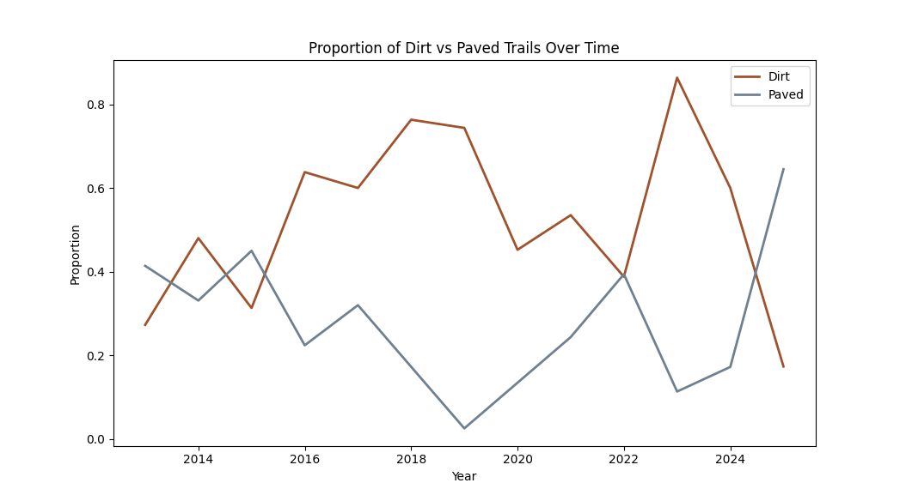
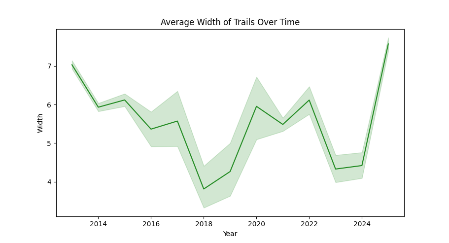
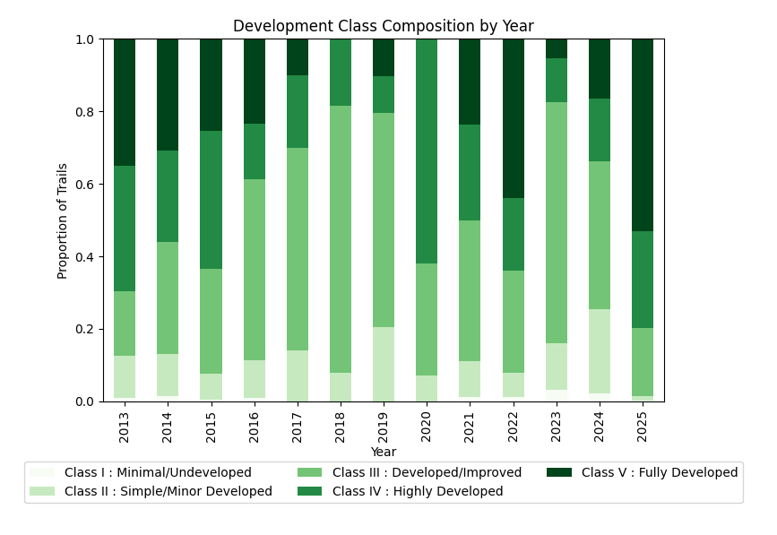
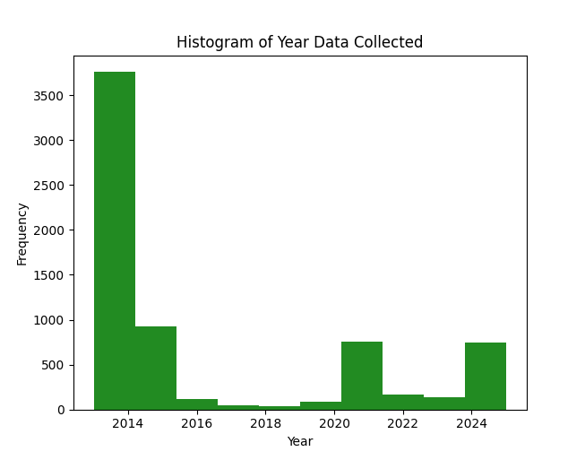
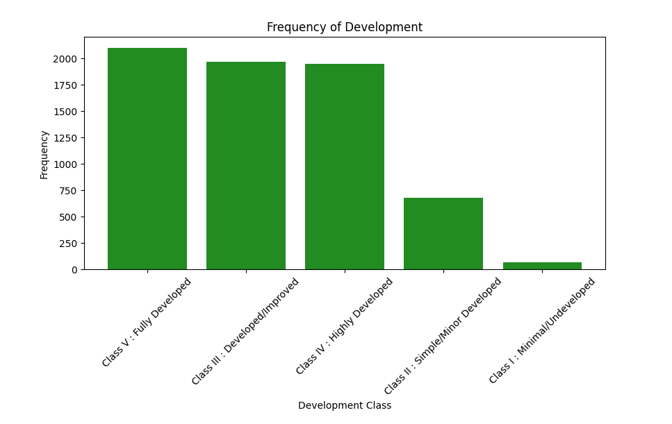

New York City Park Trails in designated 'Forever Wild' areas.
NYC Parks' "Forever Wild" initiative protects over 500 acres of unique, ecologically valuable sites across all five boroughs.
This analysis spans the years 2013-2025, and is based on datasets provided by NYC Open Data:
Parks Trails Dataset
This project investigates whether trail development classifications in NYC’s
“Forever Wild” park areas correspond to measurable structural changes over time,
including trail width and surface material.
Research Question:
Do trail development classifications correspond to structural changes in width and surface material over a ten-year period?
Hypothesis:
Higher development classes will have wider trails.
Higher development classes will show more artificial surfaces.
Surface of trails may shift over time toward increased development.
Methodology
Cleaned the dataset by removing missing values and ensuring width was stored as a numeric variable.
Extracted the year from the date column to analyze trends over time.
Calculated average and median trail width by year to look for structural changes.
Normalized surface counts into proportions within each year to see if any trends changed.
Used line plots, boxplots, and tables to compare development class with trail width and surface type.
Limitations
Width measurements are rounded to the nearest foot, limiting subtle changes over time.
Uneven sampling across years
Data on difficulty and development class are subjective
Exploratory Data Analysis
Width of Trails
Variable
Min
Q1
Median
Mean
Q3
Max
Width (ft)
3
3
7
6
9
9
Development
Class
Description
Count
Class V
Fully Developed
2101
Class III
Developed / Improved
1971
Class IV
Highly Developed
1950
Class II
Minor Developed
681
Class I
Undeveloped
70
Difficulty
Difficulty Level
Count
Slightly uneven
4074
Flat and smooth
2245
Moderate and rough
340
Strenuous climbs
96
Surface Type
Surface Type
Count
Dirt
2720
Paved
2513
Gravel
548
Wood Chips
425
Sand
224
Boardwalk
117
Concrete
110
Grasses
93
Crushed Rock
16
Road
2
Parks with Most Observed Trails
Park Name
Trail Observations
Pelham Bay Park
761
Van Cortlandt Park
663
Alley Pond Park
515
Prospect Park
371
Central Park
277
Trail Qualities Over Time

I hypothesized that there could be a change in surface materials for trails over time that would signify development.
However, surface composition remains relatively stable over time. I have dropped other surface variables to look at high indicators or development versus non-development,
pavement and dirt, with dirt trails consistently representing the largest proportion of observed trails. There are four points when dirt trails drop under paved,
however the gap in dirt over paved remains higher for longer. While paved trails show a noticeable increase between 2024 and 2025, this shift may reflect sampling variation
rather than a long-term structural trend.

I hypothesized that trail width would increase over time as an indicator of progressive development. However, the average width begins at approximately
7 feet and shows a slight decline between 2014 and 2018. Given the small magnitude of change and variation in yearly sample sizes, this pattern likely reflects
sampling variability rather than meaningful structural evolution. Additionally, width values were recorded as whole feet, limiting sensitivity to minor changes.
Even accounting for this measurement constraint, the overall stability of the trend suggests that substantial widening did not occur during the observed period.
Development Over Time
The highest proportion of trails recorded are in Class III: Developed. This fact is reflected in this line plot as it is the highest line for the majority of years, 2013-2025.
The minimally developed trails remain at the lowest points of the graph. This imbalance may partially reflect data collection bias, as undeveloped trails may be less formally documented or surveyed.
There is no clear indication that a certain class of development had a significant upward trend, suggesting that development is not obvious from this observed period.

From another perspective we see that Class III: Developed is the highest proportion of trails. Again there is no significant trend shift of development within the ten year period. In this chart it is momre obvious that there is a complete drop in Class I: Minimal/Undeveloped trails.
Frequency & Distribution


Conclusion and Ongoing Work
This analysis is an ongoing examination on whether qualitative trail characteristics, including width and surface material, reflect increasing development trends over time in NYC 'Forever Wild' areas.
Development classifications and surface types remain relatively stable in terms of highest and lowest averages over time. Notably in 2025, there were few Class I: Undeveloped trails recorded. This point could be interesting to explore, and I will look closer at 2025 for any insights.
Notably, fully developed trails consistently represent the largest proportion of recorded observations, though this may reflect documentation bias.
Future analysis will further evaluate whether development class correlates directly with artificial surface materials and wider trail structures. Expanding the dataset to include additional NYC parks data could also provide broader
insight into structural development patterns across the city’s park system.